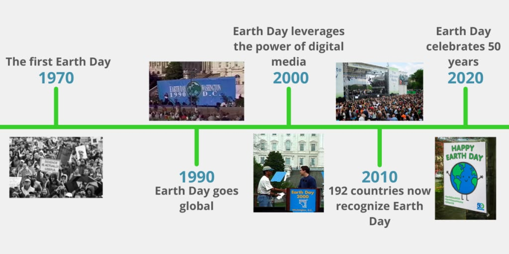

1970: The First Earth Day — Earth Day was founded on April 22, 1970, by U.S. Senator Gaylord Nelson and activist Denis Hayes to raise awareness about environmental pollution.
1990: Earth Day Goes Global — Denis Hayes helped organize Earth Day internationally, mobilizing 200 million people across 141 countries, which supercharged global recycling efforts and led up to the 1992 UN Earth Summit in Rio de Janeiro.
2000s: The Power of Digital Media — The movement expanded to focus heavily on clean energy, digital mobilization, and climate change.
A Catalyst for Global Treaties: Decades later, the momentum of Earth Day became so universally recognized that the United Nations selected Earth Day 2016 as the momentous opening day for world leaders to officially sign the Paris Agreement on Climate Change.
Today: Coordinated by EARTHDAY.ORG, Earth Day is celebrated annually by over 1 billion people in more than 193 countries, making it one of the largest secular civic observances in the world.

🌿 Nature Spotlight 🌱
✨ Wonders of Our Green Planet ✨
Take a peaceful breather and enjoy the beauty of our forests—this is what we are working together to protect! 🌍💚
Environmental Issues
Global Warming & Climate Change: Rising global temperatures and perception of extreme weather events and wildfires.
Deforestation: Loss of critical forest cover and biodiversity.
Air Pollution: Industrial emissions and urban smog affecting air quality.
Food Waste & Water Security: Resource misallocation and scarcity.
Melting Ice Caps & Rising Sea Levels: Threats to coastal ecosystems and global weather stability.
Traditional Agriculture: Resource-heavy farming strains.
Fashion and Textile Waste: Fast fashion pollution and discarded garments.
Artificial Intelligence & Tech Footprint: Energy demands of data centers and electronic waste.
Mining & Extraction: Impacts from resource sourcing like cobalt mining.